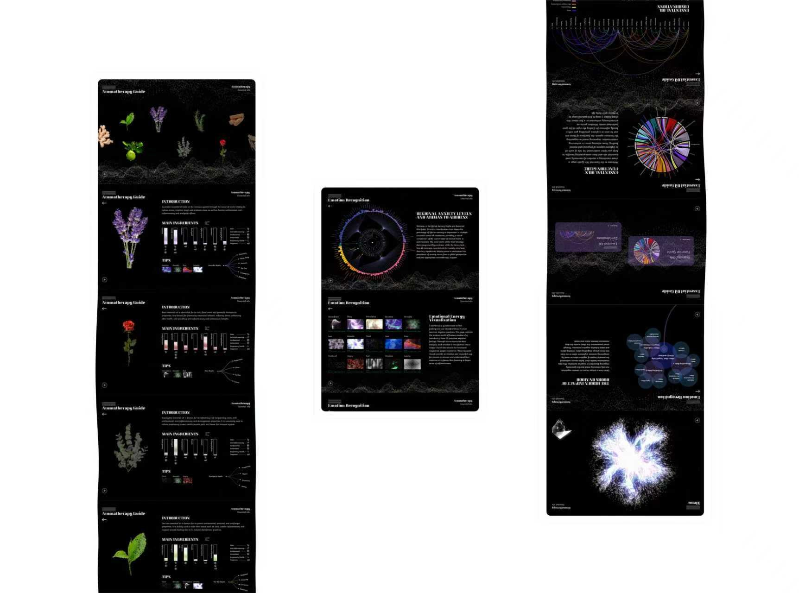
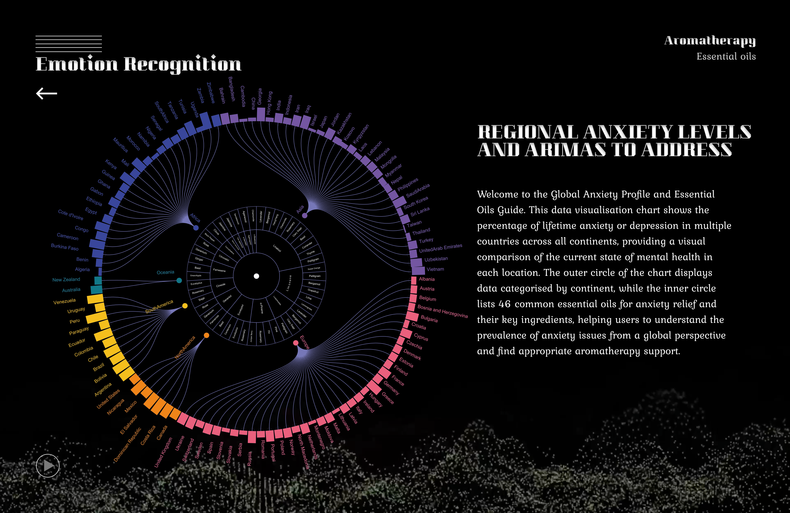
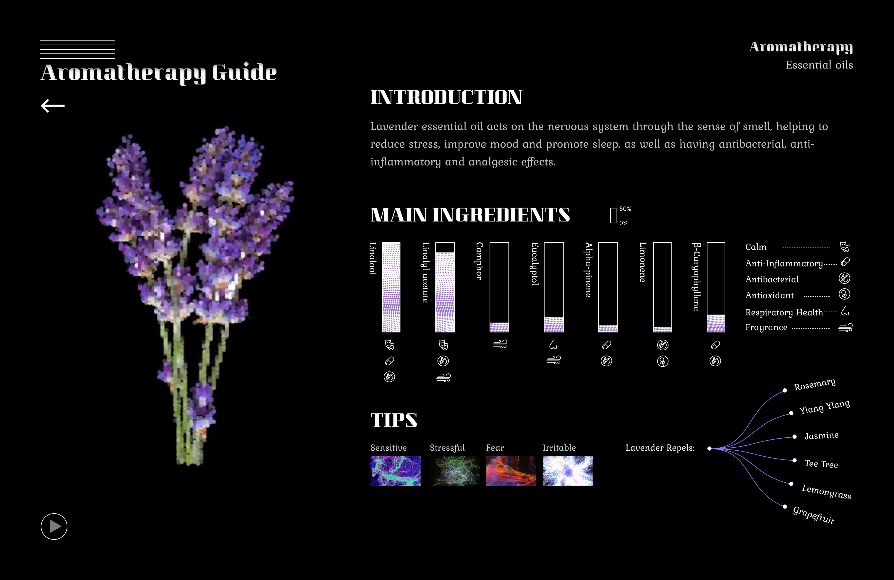
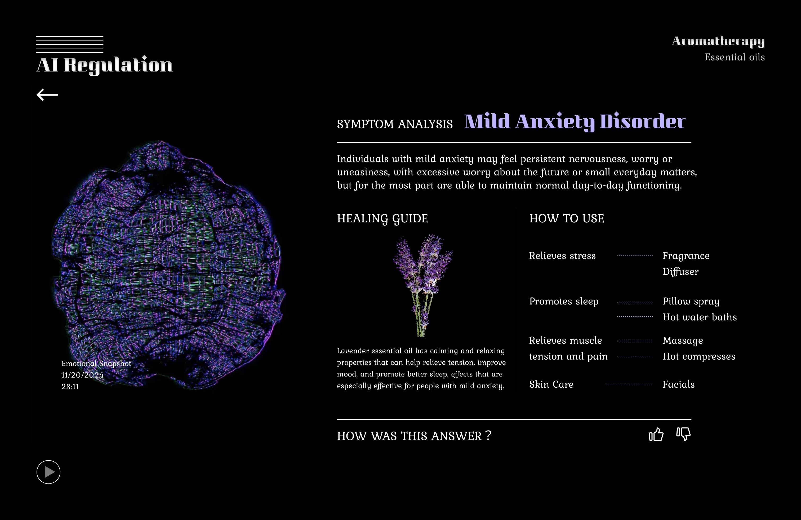
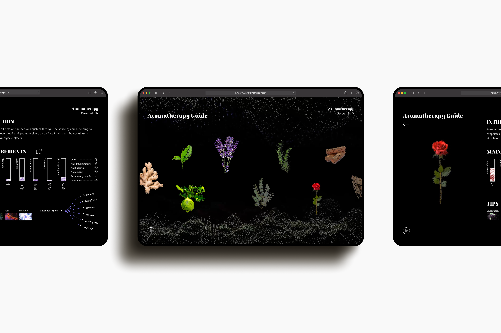

Taking the sense of smell and aromatherapy as a starting point, this work focuses on the widespread issues of emotional stress and physical and mental imbalance in modern society. The sense of smell acts directly on the brain’s emotional centres and serves as a vital link between emotions, memory and bodily perception; however, the general public’s understanding of aromatherapy remains largely confined to subjective and fragmented experiences.
以嗅觉与芳香疗法为切入点，聚焦现代社会中普遍存在的情绪压力与身心失衡问题。嗅觉能够直接作用于大脑情绪中枢，是连接情绪、记忆与身体感知的重要媒介，但当下大众对芳香疗愈的理解仍多停留在主观、零散的经验层面。
Against this backdrop, the project utilises data visualisation and intelligent interaction as its core mediums, transforming intangible olfactory perceptions, abstract emotional states and ambiguous therapeutic effects into observable, analysable and matchable visual structures.
基于此，作品以数据可视化与智能交互为核心载体，将无形的嗅觉感知、抽象的情绪状态与模糊的疗愈效果转化为可观测、可分析、可匹配的可视化结构。
The project combines facial recognition with AI-powered emotional analysis technology to capture users’ real-time emotions and physical and mental states, establishing a precise correspondence between ‘emotional data – psychological state – aromatherapy treatment plan’, thereby breaking away from the traditional model of aromatherapy, which relies on subjective perceptions for treatment selection.
项目结合人脸识别与AI情绪分析技术，捕捉用户实时情绪与身心状态，建立“情绪数据—心理状态—香氛疗愈方案”的精准对应体系，打破传统芳香疗法依靠主观感受进行适配的模式。
Furthermore, the project has brought on board professional partners who are qualified psychological counsellors, combining their expert judgement with AI technology to develop online emotional assessment, online counselling and personalised healing recommendations. Users can not only receive emotional support akin to that of an online psychological counsellor but also obtain exclusively tailored fragrance programmes based on their individual state.
同时，项目引入具有心理咨询师身份的专业合伙人，将心理咨询的专业判断与AI技术相结合，构建线上情绪评估、线上咨询与个性化疗愈建议功能。用户不仅可以获得类似线上心理咨询师的情绪支持，还能够基于自身状态获得独家定制的香氛方案。
This project goes beyond the mere dissemination of aromatherapy knowledge; it seeks to redefine sensory healing through data-driven and intelligent approaches: making hidden emotional stress visible, elucidating the relationship between scent and psychological state, and ultimately establishing a personalised aromatherapy system that is practical, adaptable and sustainable, thereby transforming the intangible healing power of scent into a new method of daily physical and mental regulation for modern people.
本作品不止于芳香疗法知识的普及，而是尝试以数据化、智能化的方式重新定义感官疗愈：让隐匿的情绪压力被看见，让气味与心理状态之间的关系被理解，并最终构建一套可落地、可适配、可持续使用的个性化香氛疗愈系统，使无形的气味治愈成为现代人日常身心调节的一种新方式。




